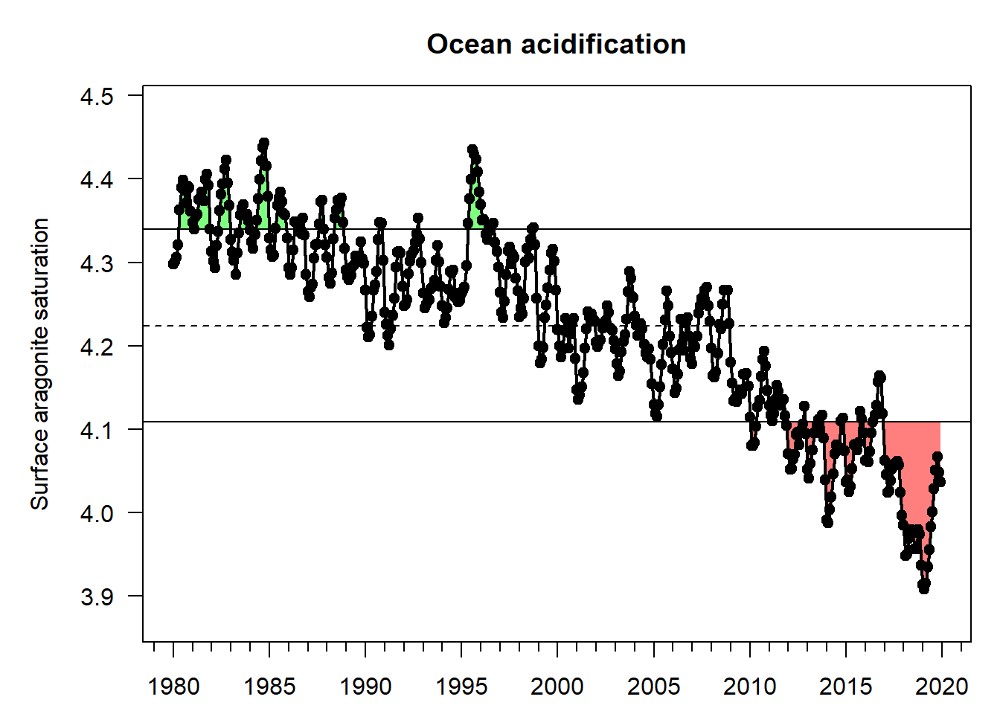
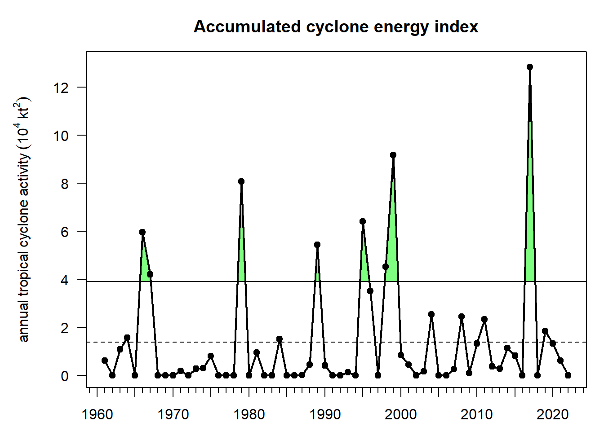
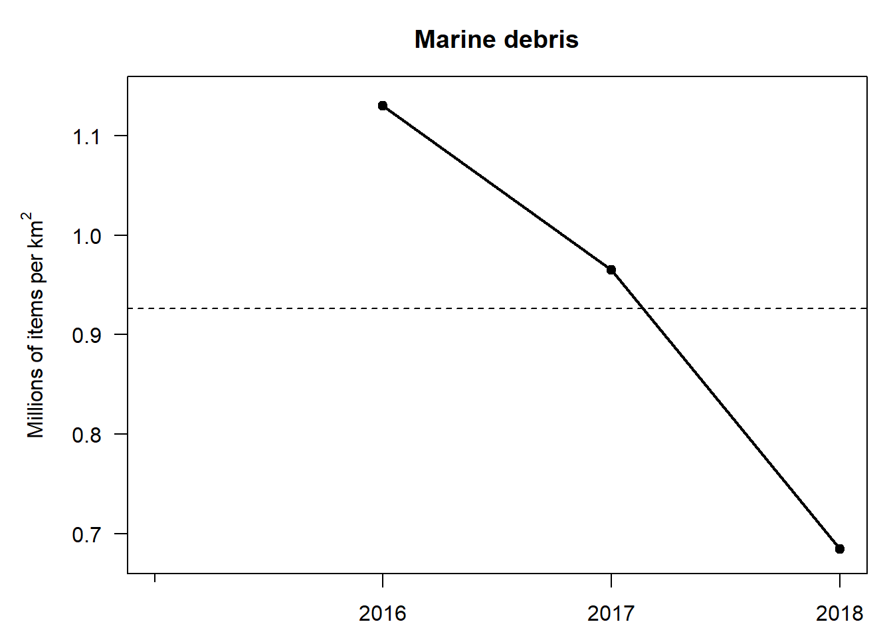
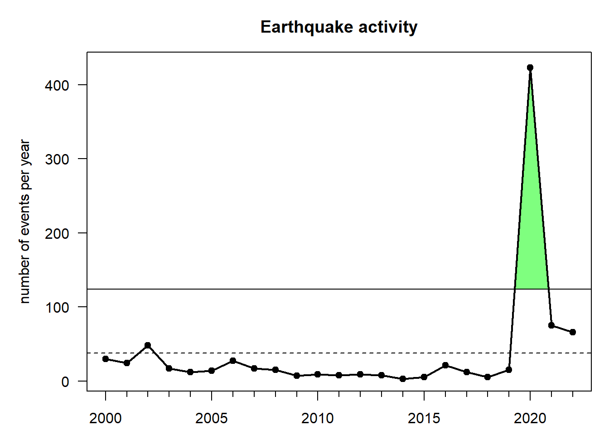
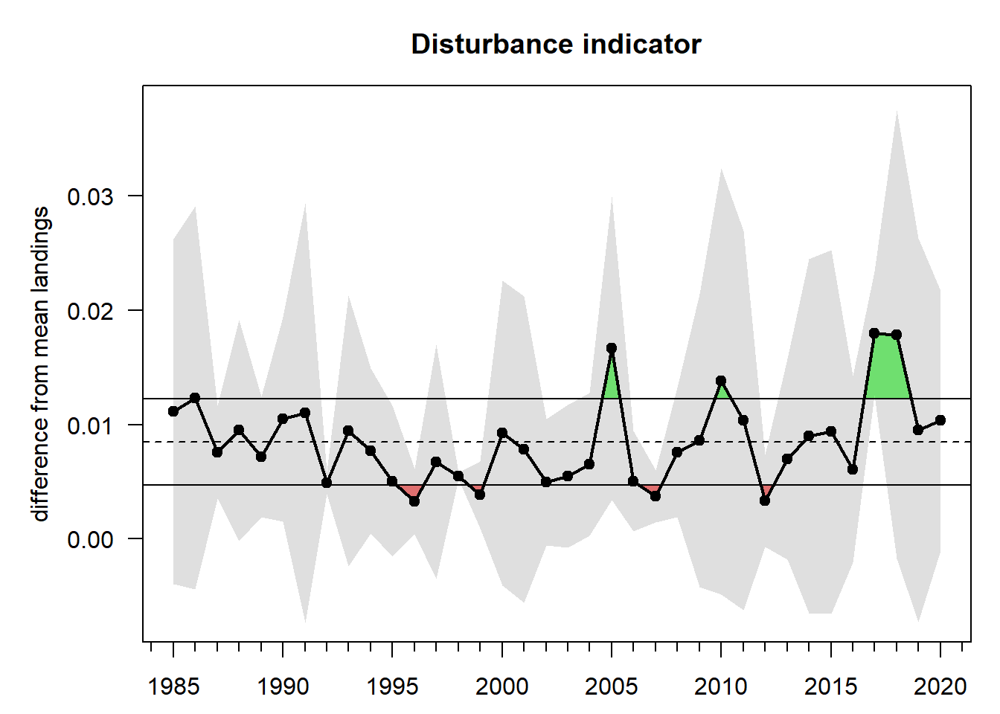
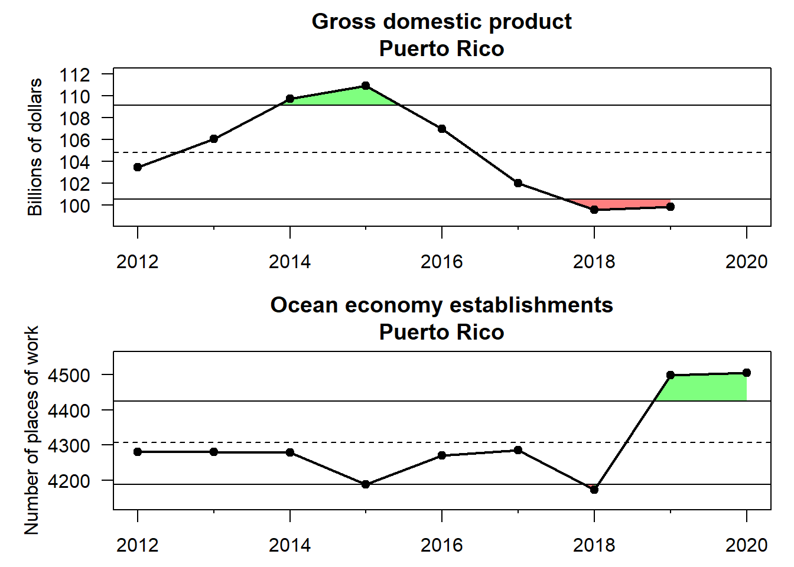
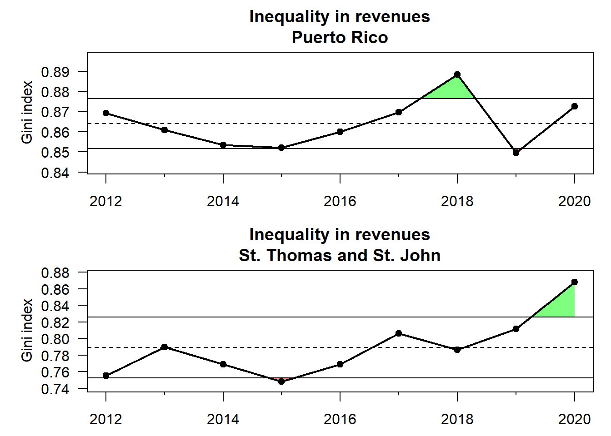
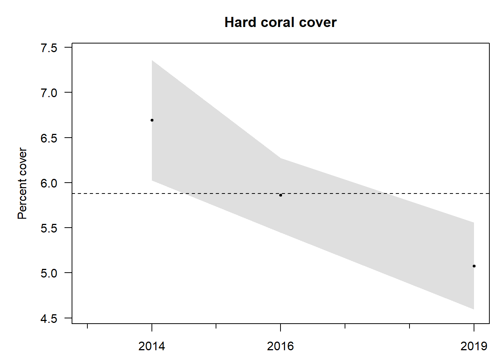

2 2. Introduction
Ecosystem-based management of fisheries and other marine resources has emerged as a priority in the U.S. (EPAP 1999, Fluharty et al. 2006, McFadden and Barnes 2009, NOAA 2016) and elsewhere (Browman et al. 2004, Sainsbury et al. 2014, Walther and Möllmann 2014, Long et al. 2015). The NOAA National Marine Fisheries Service (NOAA Fisheries) defines ecosystem-based fisheries management (EBFM) as ‘a systematic approach to fisheries management in a geographically specified area that contributes to the resilience and sustainability of the ecosystem; recognizes the physical, biological, economic, and social interactions among the affected fishery-related components of the ecosystem, including humans; and seeks to optimize benefits among a diverse set of societal goals’ (NOAA 2016).
2.1 2.1 Indicator selection
This report relied on both previously identified proposed indicators as well as expert vetting to select a suite of indicators that best address the fishery management plan (FMP) objectives for the U.S. Caribbean. The CFMC’s Science and Statistical Committee, as well as the region’s Ecosystem-Based Fishery Management Technical Advisory Panel (EBFM TAP), recently completed a series of conceptual models linking key components of the ecosystem and human activities related to fishing. This report used these conceptual models as a starting list of proposed indicators and matched the indicators to answer FMP objectives when possible. For those objectives that did not have an immediate conceptual model-identified indicator, this report used a decision matrix process for expert vetting (Fig x).
insert fig
This decision matrix was composed of a list of proposed indicators compiled from the conceptual models as well as proposed indicators provided via expert input. These potential indicators were vetted and edited by expert small working groups, who then scored a decision matrix (Fig. x) of potential indicators against the following decision criteria: long term data availability, measurability, sensitivity to environmental changes, specificity, spatial and temporal scalability, relevance to specific FMP objectives, and responsiveness to management actions.
2.2 2.2 Notes on interpreting time series figures
Time series data are plotted in a standardized format for ease of interpretation (e.g., Fig. 2.1). The x-axis represents the temporal dimension, which may be monthly, yearly, or irregular time steps, and the y-axis represents the indicator value in units specified in the axis label. The dashed horizontal line represents the mean indicator value across the entire time series, and the solid horizontal lines denote the mean plus or minus one standard deviation. Red shaded areas and green shaded areas show years for which the indicator value is below or above one standard deviation from the mean, respectively. The blue vertical shaded box highlights the last five years of indicator values, over which additional metrics are calculated. Black circles to the right of each figure indicate whether the indicator values over the last five years are greater (plus sign), less than (minus sign), or within (solid circle) one standard deviation from the mean of the overall time series. Arrows to the right of each figure indicate whether the least squares linear fit through the last five years of data produces a positive or negative slope that is greater than one standard deviation (upward or downward arrows respectively), or less than one standard deviation (left-right arrow).
3 3. Fishery management plan objectives and conceptual models
This report’s indicator selection process sought to select indicators that corresponded to the island based fishery management plan (FMP) objectives in order to track performance, and also selected indicators related to risks to meeting these management objectives. The following figure shows indicators selected per FMP objective. Indicators were also sourced and considered from the conceptual model exercise completed by the Council’s Science and Statistical Committee and District Advisory panels, which began in 2019. Top scored connections in ecosystem components were considered in the ESR indicator suite as well (Rivera et al, in publication).
4 4. Risks to meeting fishery management objectives
4.0.1 Degree heating weeks
Indicator 1
4.0.2 Ocean acidification via aragonite saturation state
Indicator 2
4.0.3 Hurricane activity
Indicator 3

4.0.4 Turbidity
Indicator 4
turbidity.RData doesn’t work
4.0.5 Sea surface temperature
Indicator 5
4.0.6 Marine debris
Indicator 6


4.0.7 Identified point source pollution sites
Indicator 7
4.0.8 Primary productivity via ocean color
Indicator 8
carib_Chl.RData doesn’t work
4.0.9 Coastal development via land cover
Indicator 9
4.0.10 Number of major earthquakes
Indicator 10

4.0.11 Fishery/market disturbance indicator (maybe belongs in socioeconomic health)
Indicator 11

4.0.12 Sargassum inundation
Indicator 12
doesn’t work
load(“indicator_objects/Sargassum.RData”) plotIndicatorTimeSeries(inddata, coltoplot = 1:2, plotrownum = 2, trendAnalysis = F, sublabel = T)
load(“indicator_objects/sargassum_innundation_monthly_mean_hu.RData”) plotIndicatorTimeSeries(inddata, coltoplot = 1:2, plotrownum = 2, trendAnalysis = F, sublabel = T)
4.0.13 Tourism via hotel occupancy
Indicator 13
doesn’t work
load(“indicator_objects/hotel_occupancy_rates_USVI_and_PR.RData”) plotIndicatorTimeSeries(inddata, trendAnalysis = F)
load(“indicator_objects/hotel_occupancy.RData”) plotIndicatorTimeSeries(inddata, trendAnalysis = F)
4.0.14 Population density
Indicator 14
4.0.15 Population change
Indicator 15
5 5. Tracking performance toward fishery management objectives
5.1 5.1 Food production
5.1.1 Fishery independent surveys of economically important species
Indicator 16
5.1.2 Commercial landings
Indicator 17
5.1.3 Maximum length and size structure
Indicator 18
5.1.4 Changes in target species / landing composition
Indicator 20
5.2 5.2 Socioeconomic health
5.2.1 Total, lobster and conch revenues
Indicator 21
5.2.2 Total, lobster and conch trips
Indicator 22
5.2.3 Ocean economy employment and wages
Indicator 23

5.2.4 GDP
Indicator 24
5.2.5 Unemployment
Indicator 25
5.3 5.3 Equity
5.3.1 Gini coefficient for distribution of landings and revenue
Indicator 26

5.3.2 Commercial fishing community engegement and reliance
Indicator 27
5.4 5.4 Engagement and participation
5.4.1 Recreational fishing engagement and participation
Indicator 28
5.4.2 Commercial fishing engagement and participation
Indicator 29
5.5 5.5 Bycatch reduction
5.5.1 Changes in gear type
Indicator 30
5.6 5.5 Governance
5.6.1 Number of seasonal closures implemented
Indicator 31
5.6.2 Number of education and outreach events
Indicator 32
5.6.3 Number of enforcement actions
Indicator 33
5.7 5.6 Protection of ecosystems
5.7.1 Percent coral cover and coral species richness
Indicator 34

5.7.2 Coral species diversity
Indicator 35
6 6. Integrated ecosystem perspectives
Stoplight plot